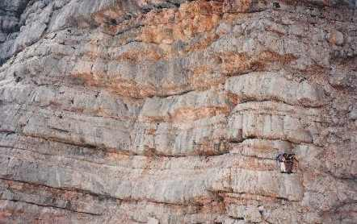
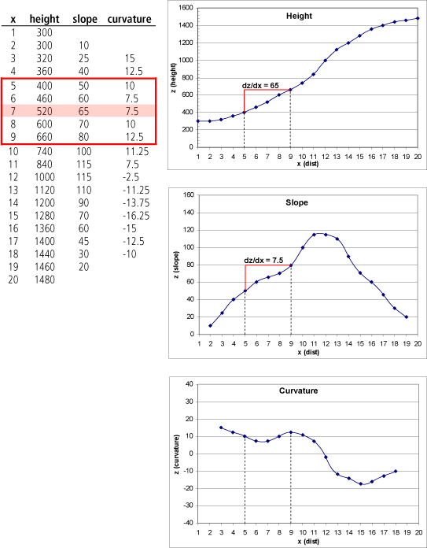
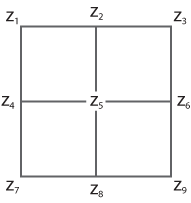
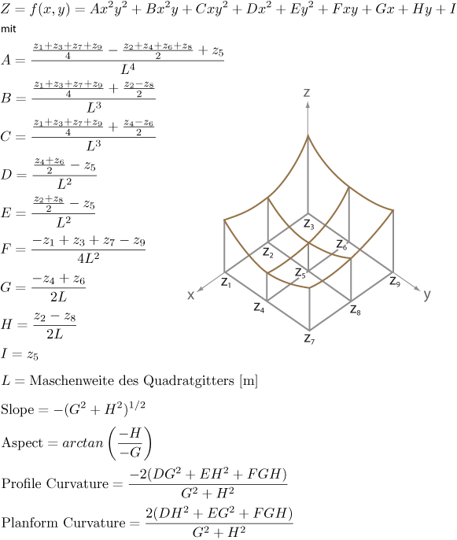

Funktionale Ableitungen aus kontinuierlichen Raumdaten

Das Phänomen Gelände spielt in
vielen räumlichen Vorstellungen eine zentrale Rolle. Diese reicht von der
kognitiven Wahrnehmung z.b. der Frage Was ist eine Wanderweg? (vgl. Abbildung)
bis zur zuvor skizzierten formalen, quantitativen Ableitung von
Eigenschaften.
In einem GIS werden die Informationen über die Form
einer Geländeoberfläche in der Regel aus Höheninformationen abgeleitet. Diese
Höheninformation wird in einem digitalen Geländemodell (DGM) gespeichert.
Digitale Geländemodelle bestehen zunächst nur aus einer spezifischen
Höheninformation für einen definierten Raumausschnitt (Rasterzelle, Punkt,
Polygon). Auf der Basis dieser Primärinformation werden zahlreiche zusätzliche
Informationen abgeleitet. Nachfolgend sollen am Beispiel der Hangneigung,
Exposition und Kurvatur skizziert werden, wie die Ableitungen mit Hilfe von
Funktionen berechnet werden. Entscheidend ist weniger die verwendete Mathematik
als vielmehr die resultierenden Informationen, die für die unterschiedlichsten
Fragestellungen verfügbar ist.
Hangneigung
Auf einer (Gelände-)Oberfläche ist die Neigung (oder auch: Hangneigung) an einem Punkt gegeben durch die Tangentialebene. Das steilste Gefälle auf dieser Tangentialebene bezeichnet man als Neigung (engl. slope). Die Neigung lässt sich aus den Ableitungen der Oberfläche in der Richtung der x-Koordinate und derjenigen in Richtung der y-Koordinate berechnen.
Um die Neigung aus einem Höhenmodell zu berechnen, braucht man daher eine Methode, mit der man Ableitungen aus den Höhenwerten schätzen kann. Die gängigste Art, dies für ein gitterbasiertes Geländemodell zu tun, ist unter dem Namen „finite Differenzen“ bekannt (Horn 1981).
Um das Prinzip der finiten Differenzen zu erläutern, sei zuerst auf den eindimensionalen Fall eines Profils (statt einer Oberfläche) zurückgegriffen. Die folgende Abbildung zeigt, wie durch Bildung des Quotienten der Differenzen der Höhe (dz) und in der Ebene (dx) zuerst die erste Ableitung (Slope), und davon ausgehend die zweite Ableitung (Curvature) geschätzt werden kann. Die gewählte Schrittweite in x-Richtung ist in diesem Fall gleich 4. Das heißt, es wird die finite Differenz bezgl. der beiden zweiten Nachbarn nach links bzw. nach rechts vom zentralen Punkt aus gebildet. Diesem zentralen Punkt wird sodann der Wert der Ableitung zugewiesen. In der Abbildung sind der Zentralpunkt sowie dz und dx entsprechend rot markiert.

Für den zweidimensionalen Fall einer Oberfläche gibt (Horn 1981) die Formeln zur Schätzung der Neigung mittels finiten Differenzen:
mit
Die Nummerierung der Punkte in der 3-3-Nachbarschaft um den Zentralpunkt (z5) zur Bildung der Differenzen ist aus der nachstehenden Abbildung ersichtlich. In den Formeln der finiten Differenzen oben fällt auf, dass die Differenzen, die durch den Zentralpunkt führen, doppelt gewichtet sind.

In einem linear interpolierten dreiecksbasierten
Geländemodell können ebenfalls mit wenig Aufwand
Richtungsableitungen berechnet werden. Die Höhe innerhalb einer Dreiecksfacette
kann bestimmt werden durch die Ebenengleichung z = ax +
by + c , wobei x, y und z die Koordinaten des Punktes sind, für
den man die Höhe berechnen möchte. Durch die drei Eckpunkte einer
Dreiecksfacette können a, b, c berechnet werden (3 Gleichungen, 3 Unbekannte).
Somit hat man die Ableitung (Neigung) in x-Richtung (a) und die Ableitung in
y-Richtung (b) bereits gefunden.
Exposition
Unter Exposition (engl. aspect) versteht man die Richtung (im Uhrzeigersinn von Norden = Azimut) des steilsten Gefälles der Tangentialebene. Wiederum benötigt man die Ableitungen in x- und y-Richtung zur Berechnung, wie sie für die Berechnung der Hangneigung schon gebildet wurden (Horn 1981):
mit
Zusätzlich muss man für die Berechnung unterscheiden, ob die Werte dieser Ableitungen negativ, null oder positiv sind (“mod” bezeichnet die Modulo-Division; ergibt den Divisionsrest):
Kurvatur
Kurvatur (engl. curvature) ist die Krümmung (d. h. die
zweite Ableitung) einer Oberfläche an einem bestimmten Punkt in eine bestimmte
Richtung.
Bei digitalen Geländemodellen sind insbesondere die
Profilkurvatur (Kurvatur in Richtung des
steilsten Gefälles) und die Plankurvatur
(Kurvatur in Richtung der Höhenlinie) von besonderem Interesse. Die
Kurvaturwerte sind negativ bei Konvexität (erhabene Formen) und positiv bei
Konkavität (Hohlformen). Die gebräuchlichste Methode, Kurvaturen in
Rastermodellen zu berechnen, wird in (Zevenbergen et al. 1987) beschrieben. Es wird ein lokales Polynom vierter Ordnung mit
neun Parametern verwendet, das durch alle neun Punkte in der 3x3-Nachbarschaft
des Zentralpunktes geht, wie dies die folgende Abbildung schematisch zeigt
(inkl. Nummerierung der Punkte für die Formeln). Dann können Plan- und
Profilkurvatur für den Zentralpunkt z5
mit folgenden Formeln berechnet werden:

Bearbeiten Sie...
In der untenstehenden Abbildung sehen sie 3D-Ansichten eines Geländes. Finden Sie heraus, welche abgeleitete Information jeweils durch Einfärbung dargestellt ist.